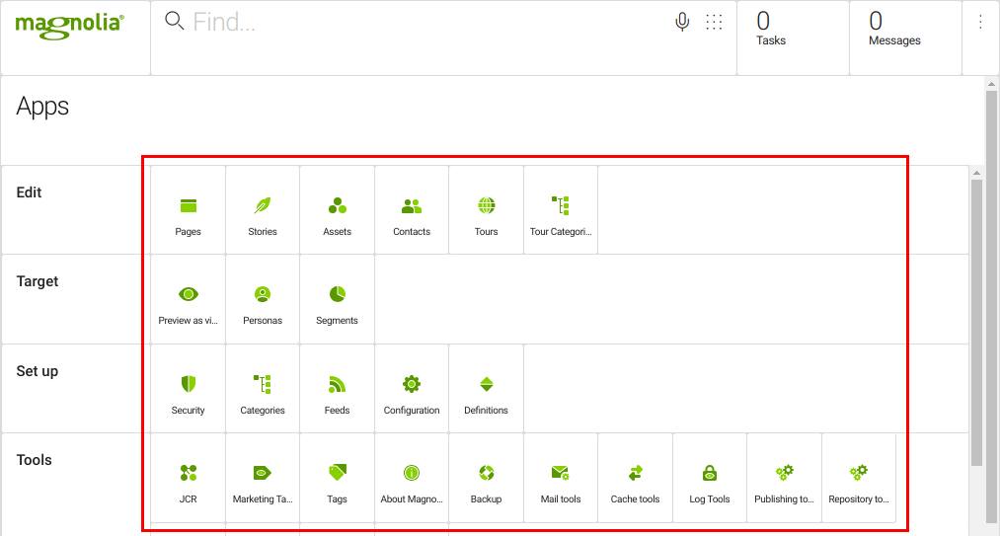
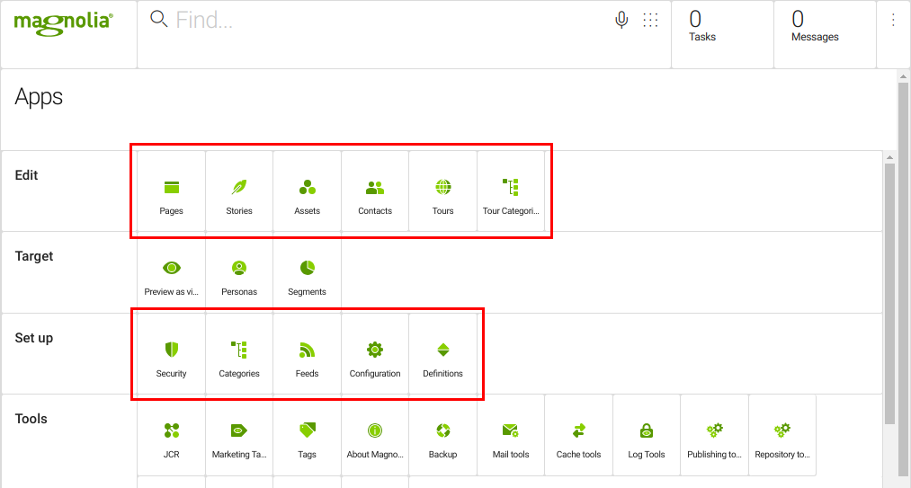
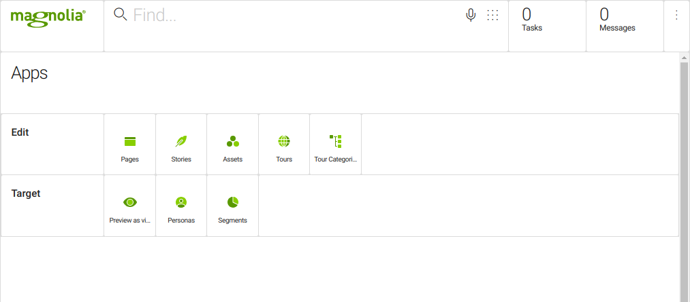

Apps
This page provides a high-level overview of Magnolia apps.
What is an app
Apps are important building blocks of Magnolia, providing segmented, task-oriented functionality to different users. Technically speaking, an app is simply a UI extension point. How you extend the UI depends on your needs and the needs of your users. Thanks to Magnolia’s open architecture, the limits of the app approach are boundless, meaning you can tailor the experience of target workgroups by customizing the UI and existing apps - and by creating new apps as needed.

To see the list of the app tiles, click the app launcher icon to the right of the Find Bar.
See screenshot
All apps are implemented using the App framework, whether they are apps provided by Magnolia or your own custom-built apps. Because content is at the heart of Magnolia, there is a specific framework subset dedicated to creating apps that manage content; apps created using this framework subset are referred to as content apps. Some examples of content apps are the Pages and Assets apps, some non-content app examples are the Log Tools and About Magnolia apps.
[.admonition-icon .confluence-information-macro-icon]##
Search for apps or for content across all your apps using the Find Bar. Open an app directly from the Find Bar using the command` open <app-name> app`, for example, type "open pages app".
Apps typically contain subapps. Generally, the app provides basic functionality such as how to open sub-apps and provide communication between subapps; whereas the subapps provide the functionality, for example, for managing content and operating on one specific workspace in the JCR. In the case of content apps, the standard subapps are the browser subapp and a detail subapp. Subapps are typically displayed to users as tabs.
Why use apps?
Apps provide many advantages, both from a technical standpoint and for end-users.
Flexibility
Many apps are provided by Magnolia and can be used out-of-the-box. You can also customize these apps or create your own Magnolia apps from scratch.
-
Use - use the apps provided by Magnolia out-of-the-box.
-
Extend - adapt the apps provided by Magnolia to suit your own requirements. This method works well if an app provided by Magnolia almost does what you need. For example, you can configure a special Pages app that displays only one website branch so that editors who mostly work in that branch don’t have to navigate there in the app. Customizing an existing app is easier and less time consuming than developing a new app from scratch. You can also use Definition decoration to customize an existing app.
-
Build - build an app from scratch if you need to do something really different such as graphs or chart or if the content app framework is too rigid. Building a new app is also the right choice for doing something very simple such as displaying some system information or providing a simple configuration tool. The Developing an app page is a good place to start.
See Choose the right app type for guidance in choosing whether to extend an app or create a new one.
Unified look and feel
Magnolia apps all provide the same look and feel, navigation and behavior because they all run in the same Magnolia Shell. Magnolia assists you in extending apps or creating new apps that follow the same rules so all users have a single point of reference.
From a developer point of view, questions about how to design website navigation and action menus become redundant as the navigation is ready made.
From an end-user point of view, standardization makes apps easy to use and learn. Since all content apps look and behave the same way, a user who has used one can quickly learn another, even if the apps operate on different content.
Independence
Apps run independently from one another. When you launch an app and then navigate to another app, the first app stays open until you come back and close it. If you navigate from an app to the app launcher, the icon for the open app is highlighted and the app remains visible in the background. This means you can switch from one app to another or the app launcher without losing any information (even if you didn’t save before switching).
For example, an author editing a page in the Pages app and decides to include an image from the Assets app. The author may add a text and image component to the page and opens the Assets chooser dialog to add an image. The list of images available is sourced from the Assets app within the page editor.
Integration
Using apps, you can connect Magnolia to multiple third-party systems, tools and data sources. Although many apps use data stored in the Java Content Repository (JCR), you can use Magnolia apps to access data anywhere while retaining a familiar working environment for your users: they always work in Magnolia apps and the apps connect to the outside world. You can store content in a database, cloud storage or a Web service.
Some common examples of this are:
-
An editor may need to access product data in a remote ERP system in order to create content to sell the products. Such remote data can reside in a relational database, on the filesystem, in a Web service, or some other data delivery service. For convenience, you make the remote data available inside the familiar Magnolia environment so editors don’t need to jump from one system to another. For example, Magnolia’s IBM WebSphere Commerce Integration module connects a WebSphere Commerce store to Magnolia.
-
Your clients need to contact you via forms on your website: the External Forms module provides the functionality to render external forms configured in marketing automation software such as Oracle Eloqua on Magnolia pages.
-
Your company uses Amazon S3 to store large assets: the Amazon S3 Connector module provides an app that allows users to manage assets in Amazon S3 while using them in Magnolia.
View a full list of third-party systems, tools and data sources Magnolia enables you to connect to on the Integration modules page.
Specificity
One app, one purpose
Apps are well suited to developing tools for very specific purposes. Consider an app as a tool with a very narrowly focused interface that enables you to work on one set of closely related tasks or one specific set of data from a single location. An example of a task-oriented app is the Content translation app, where the app allows you to manually export and re-import page content in a translation-friendly format.
An app does not necessarily work on a single, physical data set (such as the pages of a site) but may cover multiple physical data sets required to solve the task or tasks it covers. In the case of content apps, the focused interface can be a tool that lets editors work on one task at a time, such as editing a page.
Logical groups
In addition to each app being intended for a specific purpose, you can organize the apps in Magnolia’s interface into groups. In the example below taken from Magnolia’s demo site, all the content apps are grouped in the Edit group and the Set up group brings together all the administration apps. You can reorganize these groups, remove them and create your own in the app launcher layout.

Provisioning
Once you have apps, and have grouped them to suit your project, you can decide who gets to see what. With Magnolia’s provisioning functionality you can decide which users see which apps or app groups depending on their role. Once logged in, different users see exactly what you want them to see. No clutter and no searching for apps.
For example, the screenshot below shows what Eric (an editor) sees:
